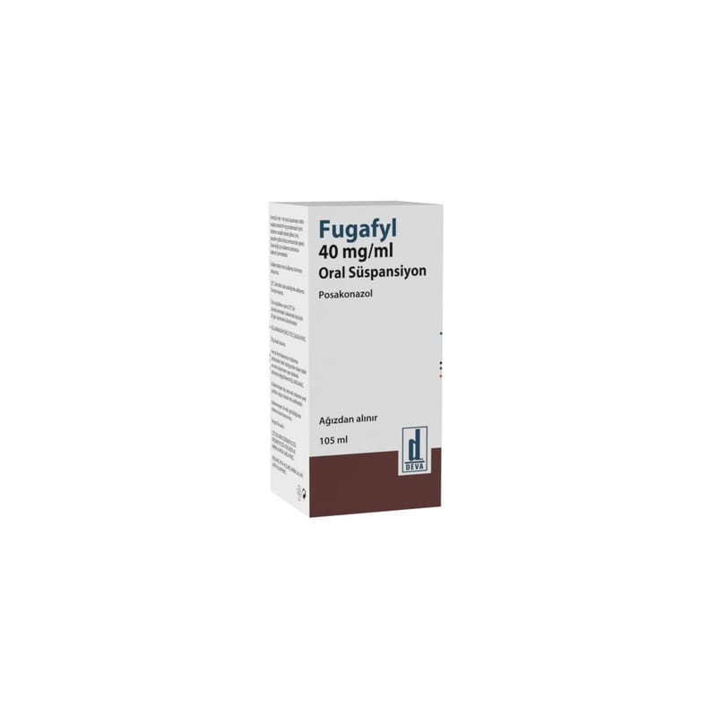

Fugafyl 40 mg/ml Oral Süspansiyon, 105 ml

Ne için kullanılır
KT · Bölüm 1FUGAFYL, posakonazol isimli bir maddeyi içerir. Bu ilaç, triazol antifungal ajanlar olarak isimlendirilen bir ilaç grubuna dahildir. Bu ilaçlar çok çeşitli mantar enfeksiyonlarının tedavisinde ve bu enfeksiyonlardan korunmak amacıyla kullanılır. FUGAFYL etkinliğini insanlarda enfeksiyonlara sebep olan bazı mantar türlerinin ölümüne sebep olarak ya da büyümesini durdurarak gösterir.
FUGAFYL 105 mL ürün içeren bal renkli cam şişe içinde süspansiyon şeklinde ambalajlanmıştır. Her bir şişede ağızdan alınacak süspansiyon için 2,5 ve 5 mL’lik ölçüm kaşığı bulunmaktadır. Süspansiyon beyaz renkte ve kiraz aromalıdır.
FUGAFYL yetişkinlerde aşağıda belirtilen türlerdeki mantar enfeksiyonlarının tedavisinde kullanılır: • Aspergillus ailesine mensup mantarların neden olduğu ve amfoterisin B ya da itrakonazol ile tedavi sırasında iyileşme göstermeyen enfeksiyonlarda veya bu ilaçların kesilmesi gereken durumlarda, • Fusarium türlerine mensup mantarların neden olduğu ve amfoterisin B ile tedavi sırasında iyileşme göstermeyen enfeksiyonlarda veya amfoterisin B’nin kesilmesi gereken durumlarda, • Kromoblastomikoz (deri ve derialtı lezyonlarına neden olan bazı mantarların derideki yaralardan vücuda girmesiyle ortaya çıkan enfeksiyon) ya da miçetoma (bazı aktinomiçetler veya mantarlar tarafından oluşturulan deri ve deri altı dokuların ve kemik dokusunun ilerleyici, harap edici enfeksiyonu) gibi hastalıklara neden olan mantarların yol açtığı ve itrakonazol ile tedavi sırasında iyileşme göstermeyen veya itrakonazolün kesilmesi gereken durumlarda, • Koksidioidler adı verilen mantarlara bağlı olan ve amfoterisin B, itrakonazol veya flukonazol gibi ajanların biri ya da birden fazlası ile tedavi sırasında iyileşme göstermeyen veya bu ajanların kesilmesi gereken durumlarda. • Candida adı verilen mantarların neden olduğu ağız veya boğaz bölgesinde daha önce tedavi edilmemiş enfeksiyonlar (“pamukçuk” olarak bilinir).
Bu ilaç ayrıca mantar enfeksiyonu gelişme riski yüksek olan yetişkinlerde mantar enfeksiyonlarının önlenmesinde kullanılabilir: • “Akut miyeloid lösemi” (AML) (bir çeşit kan kanseri) veya “miyelodisplastik sendromlar” (MDS) (bir çeşit kan kanseri) için kemoterapi alımı nedeniyle bağışıklık sistemleri zayıflamış hastalar • “Hematopoietik kök hücre naklinden” (HSCT) sonra “yüksek dozlu immünosupresan tedavi” gören hastalar (kemik iliği nakli yapılan hastalar).